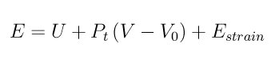

fix box/relax command¶
Syntax¶
fix ID group-ID box/relax keyword value ...
- ID, group-ID are documented in fix command
- box/relax = style name of this fix command
one or more keyword value pairs may be appended
keyword = iso or aniso or tri or x or y or z or xy or yz or xz or couple or nreset or vmax or dilate or scaleyz or scalexz or scalexy or fixedpoint
iso or aniso or tri value = Ptarget = desired pressure (pressure units)
x or y or z or xy or yz or xz value = Ptarget = desired pressure (pressure units)
couple = none or xyz or xy or yz or xz
nreset value = reset reference cell every this many minimizer iterations
vmax value = fraction = max allowed volume change in one iteration
dilate value = all or partial
scaleyz value = yes or no = scale yz with lz
scalexz value = yes or no = scale xz with lz
scalexy value = yes or no = scale xy with ly
fixedpoint values = x y z
x,y,z = perform relaxation dilation/contraction around this point (distance units)
Examples¶
fix 1 all box/relax iso 0.0 vmax 0.001
fix 2 water box/relax aniso 0.0 dilate partial
fix 2 ice box/relax tri 0.0 couple xy nreset 100
Description¶
Apply an external pressure or stress tensor to the simulation box during an energy minimization. This allows the box size and shape to vary during the iterations of the minimizer so that the final configuration will be both an energy minimum for the potential energy of the atoms, and the system pressure tensor will be close to the specified external tensor. Conceptually, specifying a positive pressure is like squeezing on the simulation box; a negative pressure typically allows the box to expand.
The external pressure tensor is specified using one or more of the iso, aniso, tri, x, y, z, xy, xz, yz, and couple keywords. These keywords give you the ability to specify all 6 components of an external stress tensor, and to couple various of these components together so that the dimensions they represent are varied together during the mimimization.
Orthogonal simulation boxes have 3 adjustable dimensions (x,y,z). Triclinic (non-orthogonal) simulation boxes have 6 adjustable dimensions (x,y,z,xy,xz,yz). The create_box, read data, and read_restart commands specify whether the simulation box is orthogonal or non-orthogonal (triclinic) and explain the meaning of the xy,xz,yz tilt factors.
The target pressures Ptarget for each of the 6 components of the stress tensor can be specified independently via the x, y, z, xy, xz, yz keywords, which correspond to the 6 simulation box dimensions. For example, if the y keyword is used, the y-box length will change during the minimization. If the xy keyword is used, the xy tilt factor will change. A box dimension will not change if that component is not specified.
Note that in order to use the xy, xz, or yz keywords, the simulation box must be triclinic, even if its initial tilt factors are 0.0.
When the size of the simulation box changes, all atoms are re-scaled to new positions, unless the keyword dilate is specified with a value of partial, in which case only the atoms in the fix group are re-scaled. This can be useful for leaving the coordinates of atoms in a solid substrate unchanged and controlling the pressure of a surrounding fluid.
The scaleyz, scalexz, and scalexy keywords control whether or not the corresponding tilt factors are scaled with the associated box dimensions when relaxing triclinic periodic cells. The default values yes will turn on scaling, which corresponds to adjusting the linear dimensions of the cell while preserving its shape. Choosing no ensures that the tilt factors are not scaled with the box dimensions. See below for restrictions and default values in different situations. In older versions of LAMMPS, scaling of tilt factors was not performed. The old behavior can be recovered by setting all three scale keywords to no.
The fixedpoint keyword specifies the fixed point for cell relaxation. By default, it is the center of the box. Whatever point is chosen will not move during the simulation. For example, if the lower periodic boundaries pass through (0,0,0), and this point is provided to fixedpoint, then the lower periodic boundaries will remain at (0,0,0), while the upper periodic boundaries will move twice as far. In all cases, the particle positions at each iteration are unaffected by the chosen value, except that all particles are displaced by the same amount, different on each iteration.
Note
Appling an external pressure to tilt dimensions xy, xz, yz can sometimes result in arbitrarily large values of the tilt factors, i.e. a dramatically deformed simulation box. This typically indicates that there is something badly wrong with how the simulation was constructed. The two most common sources of this error are applying a shear stress to a liquid system or specifying an external shear stress tensor that exceeds the yield stress of the solid. In either case the minimization may converge to a bogus conformation or not converge at all. Also note that if the box shape tilts to an extreme shape, LAMMPS will run less efficiently, due to the large volume of communication needed to acquire ghost atoms around a processor’s irregular-shaped sub-domain. For extreme values of tilt, LAMMPS may also lose atoms and generate an error.
Note
Performing a minimization with this fix is not a mathematically well-defined minimization problem. This is because the objective function being minimized changes if the box size/shape changes. In practice this means the minimizer can get “stuck” before you have reached the desired tolerance. The solution to this is to restart the minmizer from the new adjusted box size/shape, since that creates a new objective function valid for the new box size/shape. Repeat as necessary until the box size/shape has reached its new equilibrium.
The couple keyword allows two or three of the diagonal components of the pressure tensor to be “coupled” together. The value specified with the keyword determines which are coupled. For example, xz means the Pxx and Pzz components of the stress tensor are coupled. Xyz means all 3 diagonal components are coupled. Coupling means two things: the instantaneous stress will be computed as an average of the corresponding diagonal components, and the coupled box dimensions will be changed together in lockstep, meaning coupled dimensions will be dilated or contracted by the same percentage every timestep. The Ptarget values for any coupled dimensions must be identical. Couple xyz can be used for a 2d simulation; the z dimension is simply ignored.
The iso, aniso, and tri keywords are simply shortcuts that are equivalent to specifying several other keywords together.
The keyword iso means couple all 3 diagonal components together when pressure is computed (hydrostatic pressure), and dilate/contract the dimensions together. Using “iso Ptarget” is the same as specifying these 4 keywords:
x Ptarget
y Ptarget
z Ptarget
couple xyz
The keyword aniso means x, y, and z dimensions are controlled independently using the Pxx, Pyy, and Pzz components of the stress tensor as the driving forces, and the specified scalar external pressure. Using “aniso Ptarget” is the same as specifying these 4 keywords:
x Ptarget
y Ptarget
z Ptarget
couple none
The keyword tri means x, y, z, xy, xz, and yz dimensions are controlled independently using their individual stress components as the driving forces, and the specified scalar pressure as the external normal stress. Using “tri Ptarget” is the same as specifying these 7 keywords:
x Ptarget
y Ptarget
z Ptarget
xy 0.0
yz 0.0
xz 0.0
couple none
The vmax keyword can be used to limit the fractional change in the volume of the simulation box that can occur in one iteration of the minimizer. If the pressure is not settling down during the minimization this can be because the volume is fluctuating too much. The specified fraction must be greater than 0.0 and should be << 1.0. A value of 0.001 means the volume cannot change by more than 1/10 of a percent in one iteration when couple xyz has been specified. For any other case it means no linear dimension of the simulation box can change by more than 1/10 of a percent.
With this fix, the potential energy used by the minimizer is augmented by an additional energy provided by the fix. The overall objective function then is:
where U is the system potential energy, P*_t is the desired hydrostatic pressure, *V and V*_0 are the system and reference volumes, respectively. *E*_*strain is the strain energy expression proposed by Parrinello and Rahman (Parrinello1981). Taking derivatives of E w.r.t. the box dimensions, and setting these to zero, we find that at the minimum of the objective function, the global system stress tensor P will satisfy the relation:

where I is the identity matrix, h**_0 is the box dimension tensor of the reference cell, and **h**_0*d* is the diagonal part of **h**_0. **S**_*t* is a symmetric stress tensor that is chosen by LAMMPS so that the upper-triangular components of **P equal the stress tensor specified by the user.
This equation only applies when the box dimensions are equal to those of the reference dimensions. If this is not the case, then the converged stress tensor will not equal that specified by the user. We can resolve this problem by periodically resetting the reference dimensions. The keyword nreset_ref controls how often this is done. If this keyword is not used, or is given a value of zero, then the reference dimensions are set to those of the initial simulation domain and are never changed. A value of nstep means that every nstep minimization steps, the reference dimensions are set to those of the current simulation domain. Note that resetting the reference dimensions changes the objective function and gradients, which sometimes causes the minimization to fail. This can be resolved by changing the value of nreset, or simply continuing the minimization from a restart file.
Note
As normally computed, pressure includes a kinetic- energy or temperature-dependent component; see the compute pressure command. However, atom velocities are ignored during a minimization, and the applied pressure(s) specified with this command are assumed to only be the virial component of the pressure (the non-kinetic portion). Thus if atoms have a non-zero temperature and you print the usual thermodynamic pressure, it may not appear the system is converging to your specified pressure. The solution for this is to either (a) zero the velocities of all atoms before performing the minimization, or (b) make sure you are monitoring the pressure without its kinetic component. The latter can be done by outputting the pressure from the fix this command creates (see below) or a pressure fix you define yourself.
Note
Because pressure is often a very sensitive function of volume, it can be difficult for the minimizer to equilibrate the system the desired pressure with high precision, particularly for solids. Some techniques that seem to help are (a) use the “min_modify line quadratic” option when minimizing with box relaxations, (b) minimize several times in succession if need be, to drive the pressure closer to the target pressure, (c) relax the atom positions before relaxing the box, and (d) relax the box to the target hydrostatic pressure before relaxing to a target shear stress state. Also note that some systems (e.g. liquids) will not sustain a non-hydrostatic applied pressure, which means the minimizer will not converge.
This fix computes a temperature and pressure each timestep. The temperature is used to compute the kinetic contribution to the pressure, even though this is subsequently ignored by default. To do this, the fix creates its own computes of style “temp” and “pressure”, as if these commands had been issued:
compute fix-ID_temp group-ID temp
compute fix-ID_press group-ID pressure fix-ID_temp virial
See the compute temp and compute pressure commands for details. Note that the IDs of the new computes are the fix-ID + underscore + “temp” or fix_ID + underscore + “press”, and the group for the new computes is the same as the fix group. Also note that the pressure compute does not include a kinetic component.
Note that these are NOT the computes used by thermodynamic output (see the thermo_style command) with ID = thermo_temp and thermo_press. This means you can change the attributes of this fix’s temperature or pressure via the compute_modify command or print this temperature or pressure during thermodynamic output via the thermo_style custom command using the appropriate compute-ID. It also means that changing attributes of thermo_temp or thermo_press will have no effect on this fix.
Restart, fix_modify, output, run start/stop, minimize info¶
No information about this fix is written to binary restart files.
The fix_modify temp and press options are supported by this fix. You can use them to assign a compute you have defined to this fix which will be used in its temperature and pressure calculation, as described above. Note that as described above, if you assign a pressure compute to this fix that includes a kinetic energy component it will affect the minimization, most likely in an undesirable way.
Note
If both the temp and press keywords are used in a single thermo_modify command (or in two separate commands), then the order in which the keywords are specified is important. Note that a pressure compute defines its own temperature compute as an argument when it is specified. The temp keyword will override this (for the pressure compute being used by fix npt), but only if the temp keyword comes after the press keyword. If the temp keyword comes before the press keyword, then the new pressure compute specified by the press keyword will be unaffected by the temp setting.
This fix computes a global scalar which can be accessed by various output commands. The scalar is the pressure-volume energy, plus the strain energy, if it exists.
No parameter of this fix can be used with the start/stop keywords of the run command.
This fix is invoked during energy minimization, but not for the purpose of adding a contribution to the energy or forces being minimized. Instead it alters the simulation box geometry as described above.
Restrictions¶
Only dimensions that are available can be adjusted by this fix. Non-periodic dimensions are not available. z, xz, and yz, are not available for 2D simulations. xy, xz, and yz are only available if the simulation domain is non-orthogonal. The create_box, read data, and read_restart commands specify whether the simulation box is orthogonal or non-orthogonal (triclinic) and explain the meaning of the xy,xz,yz tilt factors.
The scaleyz yes and scalexz yes keyword/value pairs can not be used for 2D simulations. scaleyz yes, scalexz yes, and scalexy yes options can only be used if the 2nd dimension in the keyword is periodic, and if the tilt factor is not coupled to the barostat via keywords tri, yz, xz, and xy.
Default¶
The keyword defaults are dilate = all, vmax = 0.0001, nreset = 0.
(Parrinello1981) Parrinello and Rahman, J Appl Phys, 52, 7182 (1981).